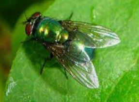

MOSCAS
El término mosca (del latín musca)1 es el nombre común de diversas especies de insectos voladores pertenecientes al orden de los dípteros (Diptera). Cabeza y ojos de mosca Las especies que pertenecen a la familia de la conocida mosca común (Muscidae) son moscas; algunas especies de familias próximas, como Calliphoridae o Sarcophagidae, reciben más bien el nombre de moscardones, dado su gran tamaño, su cuerpo peludo y el zumbido más grave de su aleteo. Otros dípteros reciben otros nombres, como los tábanos y los mosquitos.

"Tienen el cuerpo cubierto por numerosas sedas sensoriales con las que pueden saborear, oler y sentir. Las sedas de las piezas bucales y de las patas se usan para saborear; las moscas saborean lo que pisan; si pisan algo de un sabor que les sea agradable, bajan la boca y lo vuelven a probar."
Las consecuencias de su presencia en el medio ambiente y en la sociedad humana son de importancia excepcional.
- Positivo. Las moscas y otros insectos, tales como los escarabajos excavadores, son muy importantes en el consumo y eliminación de los cadáveres de los animales. Las moscas también son esenciales en convertir la materia fecal y en la descomposición de la vegetación. Las moscas taquínidas se usan como control biológico porque parasitan a distintas especies de bichos chinches. Las moscas también sirven como presa para otros animales incluyendo aves y pequeños roedores; son así parte importante de la cadena alimentaria. Algunas son activos polinizadores (por ejemplo, se crían moscas para servir como polinizadoras en invernaderos; también son buenos polinizadores de coles, otras plantas crucíferas y cebollas).
- Negativo. Dado que la materia fecal y la carne en descomposición atraen a las moscas, se implica a las moscas en la transmisión de enfermedades infecciosas como la disentería, el cólera y la fiebre tifoidea al contaminar los alimentos sobre los que se posan. También son vectores en la transmisión de epizootias, como por ejemplo la mosca tse-tsé, que propaga, por picadura, la enfermedad del sueño entre los bóvidos y el ser humano. Las larvas de algunas moscas producen miasis (gusaneras o bicheras) en el ganado (Cochliomyia hominivorax, el gusano barrenador del ganado) y en el ser humano (Dermatobia hominis).
Remedios caseros para espantar a las moscas
- Bolsas de agua
- Limón con clavos
- Vinagre de manzana
- Esencias y plantas aromáticas
- Vodka